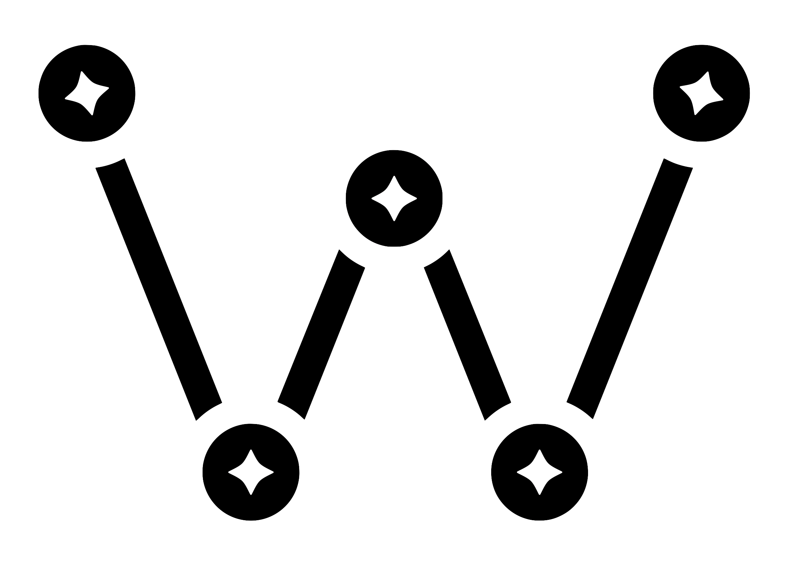
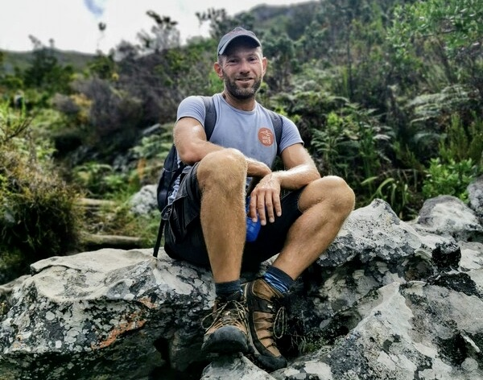
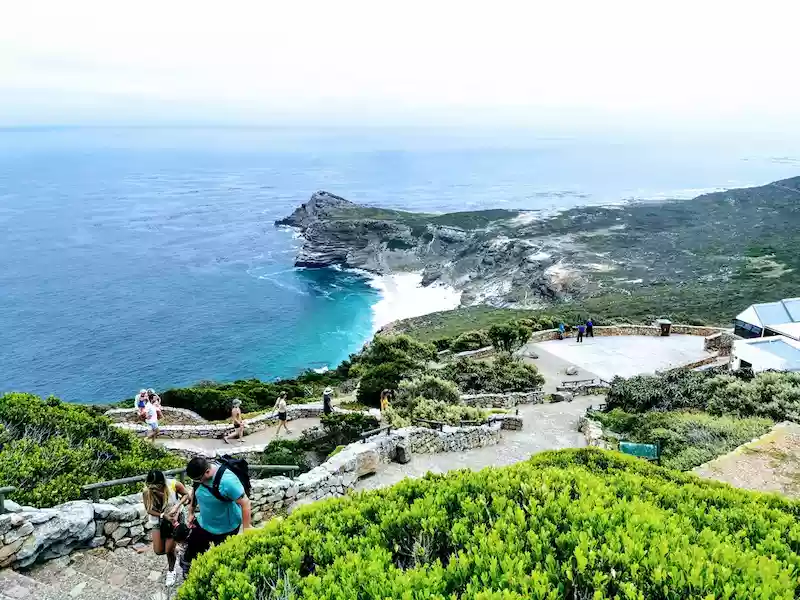
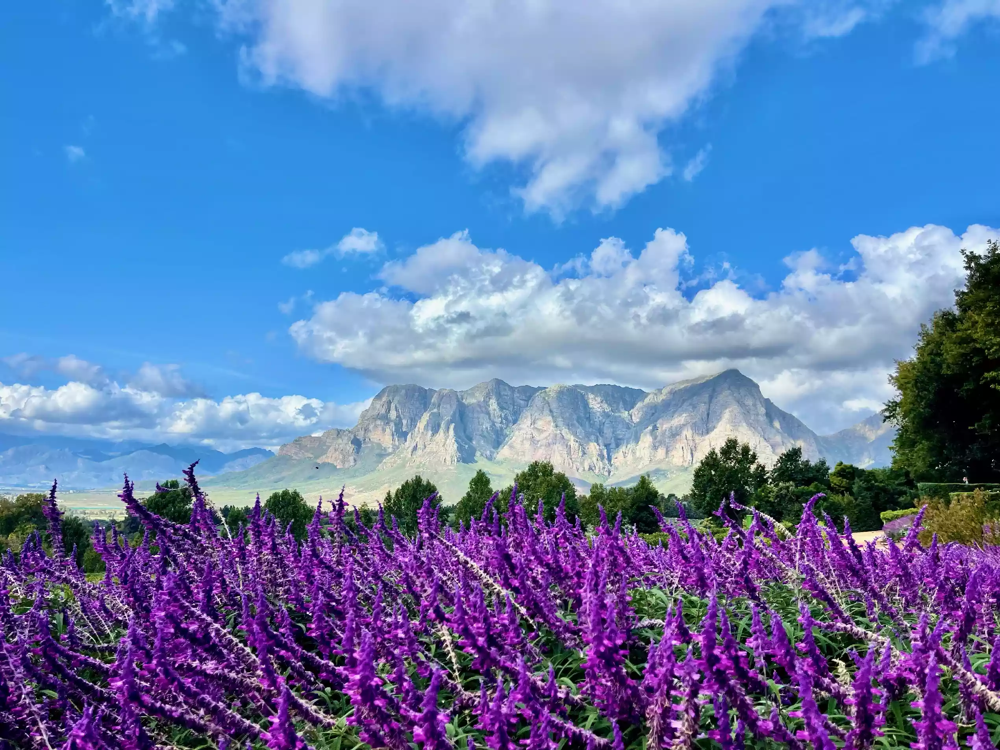
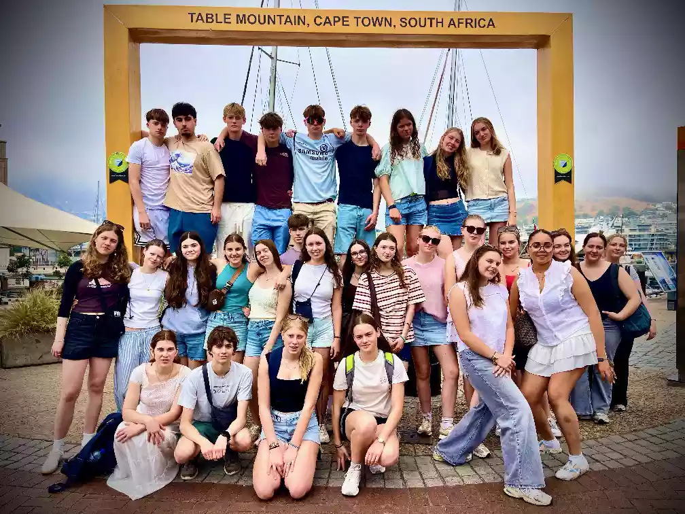

City
Behold, The Mother City
From Table Mountain’s ancient peaks to historic shores and cobblestone streets—discover the soul of Cape Town.
Discover More →
Curated journeys through history and nature.
Explore Tours
More than just a guide, I’m passionate about sharing the magic of The Cape with you and creating meaningful connections with the people and places we encounter along the way.
Every landscape has a secret history; my joy is helping you uncover it.
Discover More →From Table Mountain’s ancient peaks to historic shores and cobblestone streets—discover the soul of Cape Town.
Discover More →
Chapman’s Peak, Cape Point, penguins, and seaside villages—one unforgettable day around the Peninsula.
Discover More →
Journey down historic oak-shaded avenues, across panoramic mountain crests, and into the epicurean heart of the Cape Winelands.
Discover More →"Thank you for your unbelievable guiding. Your flexibility, clear and interesting explanations, your sense of humour and your patience made our experience special."
